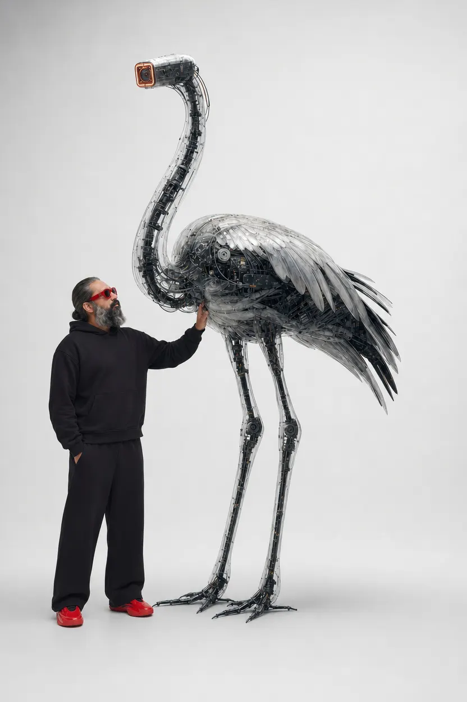

Eleven years across fintech, mobility and consumer brands, from metal cards taken through factory floors in New Jersey and Philadelphia to products people open every day. I curate the narrative, lead the teams that tell it and build the tools it needs.

From the AI X series
A brand is felt as one story, not a stack of deliverables. So the work moves between strategy, image and code: an identity in two scripts, a generative pipeline for a gold card, a browser instrument built because the right one didn't exist. Experign is the studio where those threads meet.